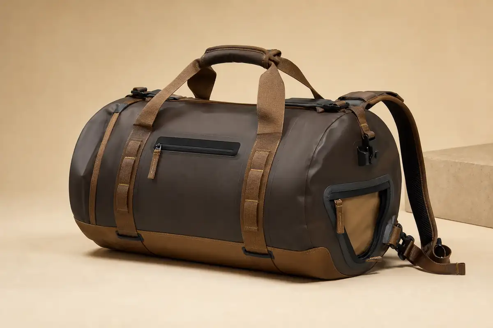

Coated Material Options
TPU/PVC-coated fabric directions or recycled coated fabric options can be reviewed against price, hand feel, color and performance targets.
Waterproof Gear Development
Original OEM/ODM development direction for outdoor brands that need coated materials, separated wet gear storage, a reinforced base and flexible shoulder-to-backpack carrying.

Development Platform
Use the 40L direction for shorter trips and daily gear, or develop a 70L version for bulkier outdoor equipment. Dimensions and load targets are finalized from the buyer brief.
TPU/PVC-coated fabric directions or recycled coated fabric options can be reviewed against price, hand feel, color and performance targets.
Plan a separate access zone for damp apparel or footwear without disrupting the main packing area.
Reinforced base panels, wrapped webbing and removable padded backpack straps are developed around the intended load.
OEM/ODM
Sampling & MOQ
MOQ is quoted after material, color, capacity, hardware, logo and packaging are reviewed. Sampling confirms the construction and target performance before any bulk-production claim is made.
Quality Control
Coated face, backing, color and approved hand feel are checked against the sample.
Load points, base construction, handles and strap attachments receive focused inspection.
Openings, wet/dry separation, zippers, buckles and removable straps are operated during QC.
Logo placement, labels, polybag, carton quantity and carton marks follow confirmed specifications.
FAQ
MOQ depends on coated material, color, capacity, hardware, logo method and packaging. Send the estimated order quantity for a realistic option.
Yes. Capacity, opening, internal organization, wet/dry layout and carry system can be adjusted during OEM/ODM development.
No untested claim is made. Water resistance or waterproof targets depend on material, seam construction, closures and an agreed test plan.
Recycled coated directions can be reviewed subject to availability, color, performance target and order quantity.
Send target capacity, quantity, market, material direction, logo method and any reference brief.